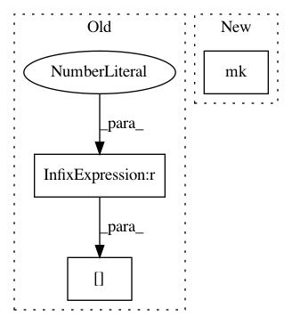

9e0e1e2c0735a68a344ff5c5465475dc43fcc09c,doc/examples/reconst_dki.py,,,#,78
Before Change
AK[AK > 2] = 2
AK[AK < 0] = 0
RK[RK > 2] = 2
RK[RK < 0] = 0
Now we are ready to plot the kurtosis standard measures using matplotlib:
After Change
kurtosis (MK), the axial kurtosis (AK) and the radial kurtosis (RK).
MK = dkifit.mk(0, 2)
AK = dkifit.ak(0, 2)
RK = dkifit.rk(0, 2)
In pattern: SUPERPATTERN
Frequency: 3
Non-data size: 3
Instances
Project Name: nipy/dipy
Commit Name: 9e0e1e2c0735a68a344ff5c5465475dc43fcc09c
Time: 2015-09-25
Author: rafaelnh21@gmail.com
File Name: doc/examples/reconst_dki.py
Class Name:
Method Name:
Project Name: nipy/dipy
Commit Name: 2583f95327606913a0d06529ebb658e7e68db940
Time: 2019-11-23
Author: rafaelnh21@gmail.com
File Name: dipy/reconst/tests/test_dki.py
Class Name:
Method Name: test_compare_MK_method
Project Name: nipy/dipy
Commit Name: 5e7904048b9ba3756bf5a2d30492ac2bb444b9db
Time: 2019-11-28
Author: rafaelnh21@gmail.com
File Name: dipy/reconst/tests/test_dki.py
Class Name:
Method Name: test_MK_singularities